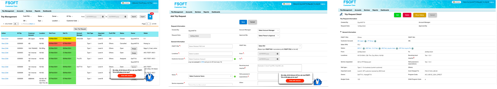
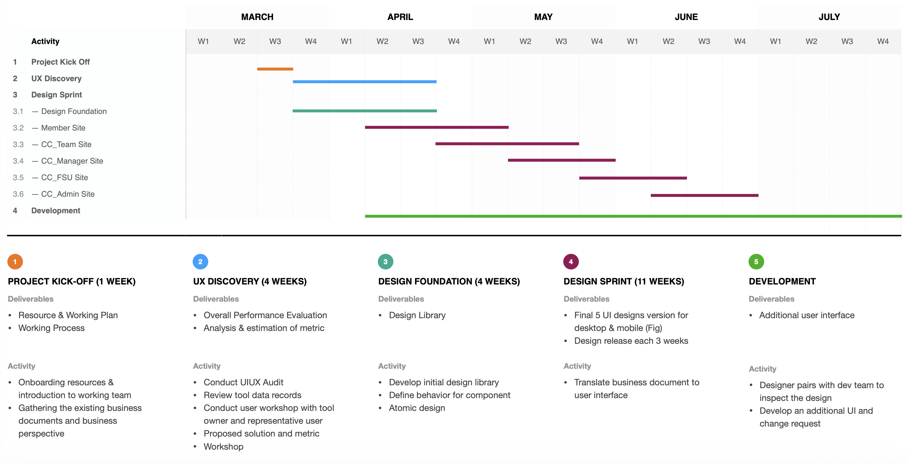
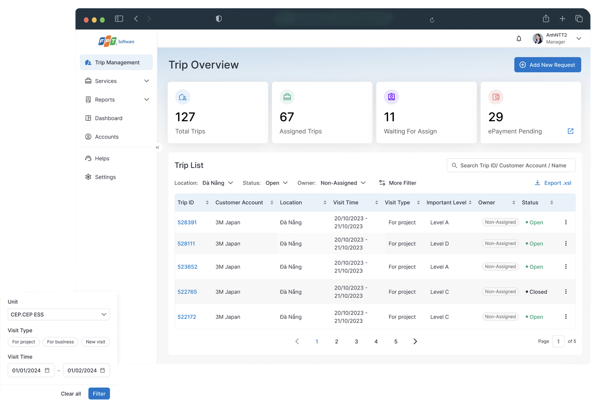

Overview
Where this started
The tool was old enough that nothing new could be attached to it — it sat outside the rest of the stack, Salesforce above all, and gave account staff no way to note what a customer said while they were still with them. The brief was not a cleanup: assess it, then design something that could grow and connect.
Who was involved
Business owner
The customer relations team. They ran the visits and used the tool every day.
Sponsor
Paid for the enhancement and carried it inside the business.
Tool owner
Owned the tool and built what was asked for.
Consultant
My team. The audit, the new design, and the optimisation work.
What the enhancement promised
Faster core task
Cut the time and the errors in planning a visit, starting with the form at the centre of it.
Work on the move
Note what a customer said while still with them, from a phone, between meetings.
Connect to the stack
Reach the rest of the ecosystem the old tool sat outside of, Salesforce above all.
Room to grow
A design foundation the tool could be extended on, instead of patched again.
What it takes to host a customer
A senior customer flies in for two days. Before they land, someone books the meetings, drafts an agenda, assigns who from which delivery unit attends, sets a budget and records what the visitor cares about. Get it wrong and the company looks careless in front of the account it most wants to keep.
All of that lived in one internal tool, and the record passed through several hands before a visit happened.
Who touches a visit
The manager carries the coordination load: they open the record, chase the delivery unit, and answer for it if the visit goes wrong.
What the form looked like

Thirty fields, one page
No grouping and no sections. Nothing tells you where one decision ends and the next begins.
Two columns of the same thing
Dropdowns and date pickers side by side, with nothing to show which of them belong together.
A chatbot on top of the form
The support widget sits over the input area, on the screen people opened most.
People had built habits around not trusting it
Five days of audit, then interviews with three managers who run visits daily, plus the tool owner and the business owner. The complaint I expected was "it's ugly". What came back was sharper, and it is the finding the rest of this project hangs off.
The filters were not slow. They were wrong — they ran against an old database, so what came back could not be trusted, and people had quietly stopped using eleven of the fourteen. That is a different problem from a tool being hard to use, and it needs a different fix.
A clear enough picture to design against. Not a picture that fits in three and a half months.
Everything pointed at the same form
Five days of audit, five interviews, and a survey of the wider team. They disagreed about plenty. They agreed about one screen.
- Audit key findings
- User interview and survey
- Business data
36 usability defects by severity
| Severity | Count |
|---|---|
| Critical | 1 |
| Notable | 13 |
| Worth attention | 14 |
| Minor | 8 |
| Role | Responses |
|---|---|
| Member | 35 |
| Team Leader | 4 |
| Manager | 4 |
| FSU | 2 |
| Year | Requests |
|---|---|
| 2020 | 620 |
| 2021 | 810 |
| 2022 | 1,040 |
| 2023 | 1,376 |
| 2024 (planned) | 2,096 |
| 2025 (forecast) | 2,650 |
Audit Findings
Five modules audited against usability and accessibility heuristics. The one critical defect sits on the request form — the screen managers open most.
BY SEVERITY
The trip-creation form is long and its information is not grouped, so it is easy to lose your place, easy to enter the wrong thing, and hard to check afterwards.
Components and information structure were not built for how the work is actually done, and the tool does not surface the features or the information people need.
Inconsistent structure and interface design, and features that do not work efficiently — the task slows down.
Elements that do not follow the stated design guidelines and do not make their own usability clear.
User Interview & Survey
Three managers who run visits daily, plus the tool owner and the business owner, over MS Teams. A survey went to the rest of the team in the same week.
MAIN PROBLEMS
WHAT THEY ASKED FOR
Business Data
Volume was climbing year on year. What one visit involves stayed roughly the same.
TRIP METRICS
How the work was planned
This is the plan as proposed, before the scope was cut. It is here because the sequencing decision inside it — foundation first, screens second — is the one that survived everything that came later.
- Design principle
- Process & allocation
- Timeline & Activity
- Collaboration & communication

Project kick-off (1 week)
Deliverables
- Resource & working plan
- Working process
Activity
- Onboarding resources and introduction to the working team
- Gathering the existing business documents and business perspective
UX discovery (4 weeks)
Deliverables
- Overall performance evaluation
- Analysis & estimation of metric
Activity
- Conduct UI/UX audit
- Review tool data records
- Conduct user workshop with tool owner and representative user
- Proposed solution and metric
- Workshop
Design foundation (4 weeks)
Deliverables
- Design library
Activity
- Develop initial design library
- Define behavior for components
- Atomic design
Design sprint (11 weeks)
Deliverables
- Final UI designs for desktop & mobile (Figma)
- Design release every 3 weeks
Activity
- Translate business documents into the user interface
Development
Deliverables
- Additional user interface
Activity
- Designer pairs with the dev team to inspect the design
- Develop additional UI and change requests

Design went to development in pieces, not as a package: overview on 8 April, the request form on the 9th, agenda on the 11th. Three releases in four days, each one something the client's dev team could start on while the next was still being drawn. Getting there meant the scope had to give.
Three surfaces carried the narrowed scope
The scope narrowed to one role: the manager, on desktop and mobile. The overview answers "what needs me today" before anyone touches a filter. The request form gives thirty loose fields somewhere to belong. Mobile did not exist at all, and now does the four things people do between meetings. All three were possible because the foundation came first — colour and type on day one, then buttons, form controls, validation and the search pattern inside two weeks. Only then did anyone draw a screen.
The screens
Dashboard swapped fourteen filters and red/green-flooded rows for five status widgets and status as a label, not a fill. Form Request split thirty loose fields into a tabbed record — overview, agenda, customer log, travel, history — with set status and assign owner promoted into the header. Mobile Design, built from nothing, covers the four things people do between meetings: assign an owner, read the agenda, send meeting details, see what a visitor cares about. Two of the nine needs people asked for stayed out of scope here: keeping a draft when the session expires, and noting a visitor's preference on the spot.
Screens

It shipped, and I never got the number
Phase 1 released. Phase 2 and 3 carried on with the features that had been cut for being nice rather than necessary, and the tool now sits inside the company super app as a webview — which is the real vindication of the narrowing call. What I cannot give you is a post-release number: every time figure on this page is a pre-launch model, and I want to be exact about that rather than let a percentage do work it hasn't earned.
The modelling itself is worth reporting honestly too. Four revisions of the estimate exist and they do not agree — baselines of 5.75, 2.46 and 6.2 minutes appear across them. I would present the last: 6.2 → 3.6 minutes, a 42% reduction (estimated), because it is the only revision whose arithmetic is internally consistent and it is the most recent. The "34%" in the summary paragraph was never updated when the model changed, and I would not quote it.
What I would defend without qualification is the defect and needs accounting: all 36 audit findings addressed in the design (counted), and six of nine user needs met — the other three counted rather than quietly dropped (counted).